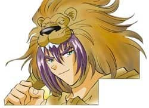
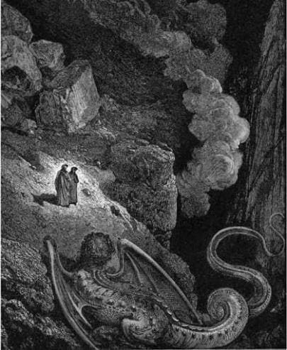
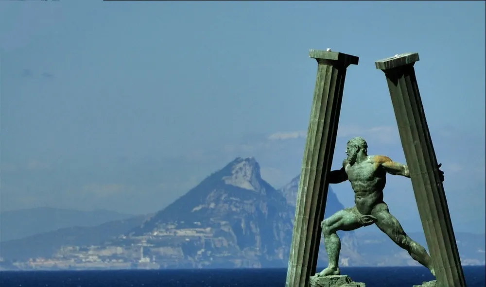
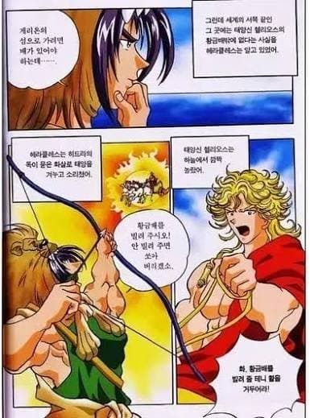
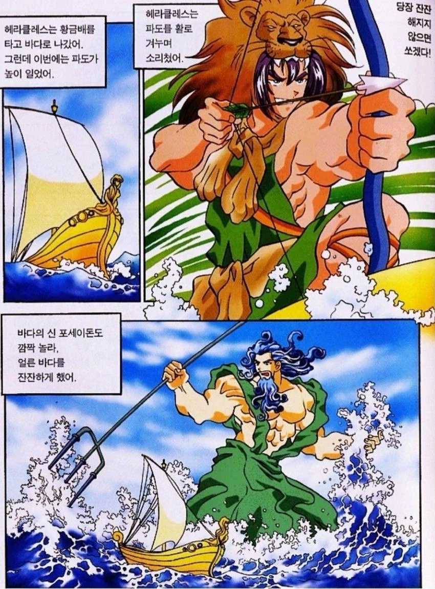
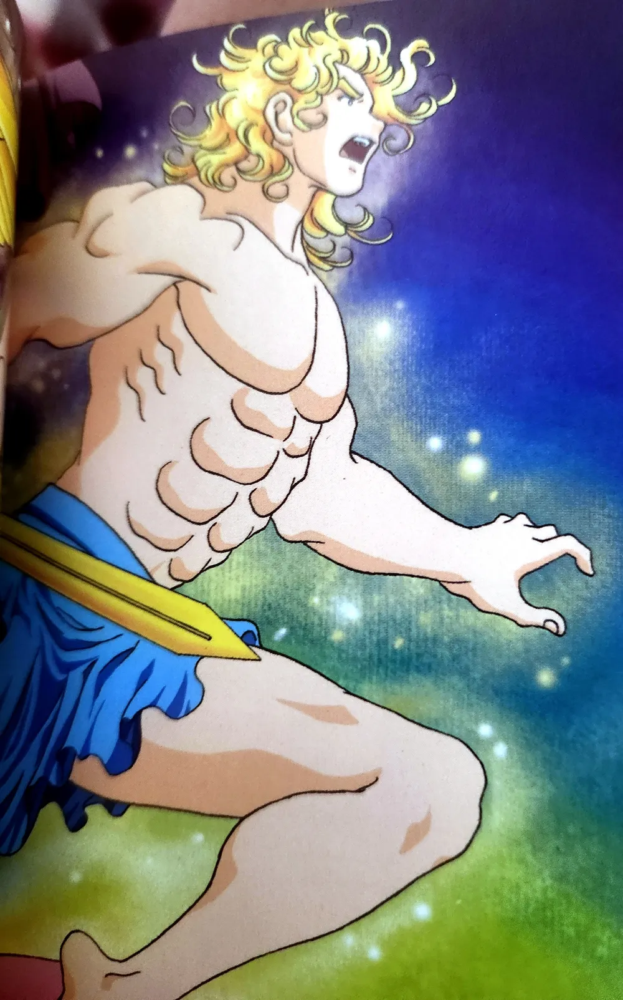
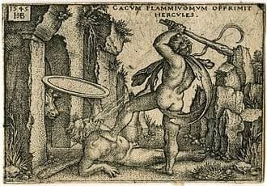

그리스 로마 신화의 괴력남 헤라클레스.
아내와 자식들을 죽인 것을 속죄하기 위해 10개의 과업(추후에 억지 부려서 2개 더 늘음)을 수행 중이었다.

10번째 과업인 "게리온의 황금소"를 가져오기를 달성하기 앞서 문제가 있었다.
바로 거대한 아틀라스 산맥이 가로 막고 있어서 게리온이 있다는 서쪽 땅으로 가기 어려웠다는 것...
빙 돌아가면 몇 년이나 더 걸리는 상황인지라 난처해진 헤라클레스는 오랜만에 머리를 썼다.

"그냥 뚫고 지나가면 되잖아?"
산맥을 주먹으로 부수면 일직선으로 갈 수 있어 간단하다는 사실을 깨달은 것....!
그래서 산맥을 부수고 지중해와 대서양을 연결 시켜 강제로 운하를 개통했으니
훗날 헤라클레스가 뚫은 길을 지브롤터 해협이라 부른다고한다
어쨌거나 길을 뚫긴했지만. 여기서 문제가 또 생긴다.
바로 게리온이 있는 섬으로 가는 길이 너무 험해 일반적인 배로는 갈 수 없다는 것이다.
헤라클레스라고 해도 맨몸으로 바다를 건넌다는 건
심해에서 작은 아버지를 뵙고 바로 큰 아버지 댁으로 가야하는 일이기 때문에....
그는 또 지혜를 짜내야만 했다.

"배를 빌려주지 않으면 화살을 쏘겠다. 헬리오스!"
생각해보니 친척 분이 좋은 배를 가지고 있다는 걸 깨달은 헤라클레스 협상을 시작했다.
다행히 태양 신은 증손자(족보상 진짜 헬리오스 직계임)의 귀여운 부탁을 흔쾌히 들어주었고.
그렇게 배를 얻을 수 있었다.
그런데 여기서 또또또또 문제가 생겼으니.....
배를 타고 건너니까 이번에는 파도가 마구 몰아쳐 배를 덮쳐댔다!
다행히 이번에는 해결책을 빨리 내놓을 수 있었다.

"당장 멈추지 않으면 독화살을 쏘겠다. 포세이돈!!!"
작은 아버지께서는 조카의 고난을 두고 볼 수 없었고, 즉시 파도를 멈췄다.
이런 따뜻한 친척들의 도움 덕분일까? 헤라클레스는 게뤼온이 있는 곳까지 쉽게 갈 수 있었다.
그런데 이런! 족보를 따져본 헤라클레스는 크게 놀라고 만다.

게리온은 사실 헤라클레스의 사촌인 크리사오르의 아들.
즉, 오촌 조카였던 것이다!

친인척을 만나자마자 헤라클레스는 따뜻하게 몽둥이질과 히드라 화살로 반겨주었고
이에 감격한 게뤼온은 말없이 그에게 황금소를 주었다고 한다.
끝.
댓글
수집 당시 댓글 53개
ㅇㅇ · 11.05 22:14:58
· 모하비배달부 · 11.05 22:15:54
ㅇㅇ · 11.05 22:15:26
도마뱀비늘갈이 · 11.05 22:17:39
삭제됨 · 11.05 22:18:21
· ㅇㅇ · 11.05 22:21:27
· ㅇㅇ · 11.06 07:56:51
ㅇㅇ · 11.05 22:21:02
· ㅇㅇ · 11.06 19:07:59
· ㅇㅇ · 11.07 17:57:36
ㅇ야 · 11.06 00:31:15
· Elleos · 11.06 01:53:20
ㅇㅇ · 11.06 00:34:09
· ㅇㅇ · 11.06 04:22:47
· ㅇㅇ · 11.07 01:15:34
· DEXT · 11.07 12:17:40
뭐야돌려줘요 · 11.06 01:58:26
WakandaHanzo · 11.06 12:27:29
땨뗘(봇) · 11.06 23:08:15
ㅇㅇ · 11.06 23:23:16
ㅇㅇ · 11.06 23:23:23
ㅇㅇ · 11.06 23:29:02
번개장터 · 11.07 00:15:39
환란 전 교회 휴거 · 11.07 00:48:10
ㅇㅇ · 11.07 01:26:36
마슈마론 · 11.07 02:33:20
ㅇㅇ · 11.07 03:09:27
ㅇㅇ · 11.07 03:56:49
ㅇㅇ · 11.07 04:36:40
ㅇㅇ · 11.07 04:59:30
ㅇㅇ · 11.07 05:02:30
ㅇㅇ · 11.07 05:32:36
ㅇㅇ · 11.07 06:00:14
ㅇㅇ · 11.07 07:38:23
ㅇㅇ · 11.07 07:38:27
ㅇㅇ · 11.07 07:42:27
ㅇㅇ · 11.07 08:35:00
ㅇㅇ · 11.07 09:04:17
ㅇㅇ · 11.07 09:50:39
ㅇㅇ · 11.07 09:58:13
ㅇㅇ · 11.07 10:03:34
ㅇㅇ · 11.07 10:12:43
ㅇㅇ · 11.07 10:24:22
ㅇㅇ · 11.07 11:20:01
ㄴㄴ · 11.07 11:37:34
ㅇㅇ · 11.07 11:49:09
ㅇㅇ · 11.07 12:24:43
ㅇㅇ · 11.07 12:34:21
JungNu · 11.07 15:18:41
ㅇㅇ · 11.07 15:22:45
ㅇㅇ · 11.07 15:24:55
ㅇㅇ · 11.07 16:59:43
ㅇㅇ · 11.07 17:45:26